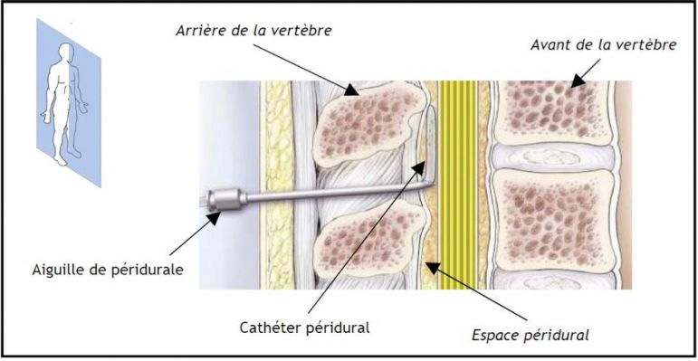

Rendez-vous : 01 58 41 39 39
- URGENCES
1er étage - Plan Vigipirate : Accès unique
123 Bd de Port Royal 75014 Paris
-
Accueil

-
Informations médicales
-
Anesthésie - Réanimation
- Péridurale et prise en charge de la douleur de l'accouchement

| Péridurale et prise en charge de la douleur de l'accouchement | Imprimer |
|
Ce document est destiné à vous informer sur la technique d'analgésie péridurale, ses avantages et ses risques.
1. QUELLES SONT LES PRINCIPALES CARACTERISTIQUES DE La première partie du travail s'étend du début des contractions utérines jusqu'à la dilatation complète du col La deuxième partie du travail correspond à la progression fœtale jusqu'à l'expulsion. La douleur pendant cette phase est liée à la distension des structures du petit bassin.
2. QU'EST-CE QUE La mise en place de la péridurale est un geste médical réalisé par un Anesthésiste Réanimateur qui a pour but de bloquer la transmission nerveuse de la douleur (analgésie) provenant des nerfs utérins et du petit bassin, en injectant à leur proximité un produit anesthésique local associé ou non à un dérivé de morphine.
L'absence de douleur procure un meilleur confort maternel et une meilleure concentration sur les efforts expulsifs ainsi qu'une stabilité des fonctions vitales bénéfique pour la mère et l'enfant. La péridurale a aussi des effets bénéfiques sur le déroulement du travail en améliorant la dynamique des contractions utérines et en permettant un meilleur relâchement de l'utérus. Enfin, la péridurale permet une prise en charge plus rapide des interventions obstétricales notamment pour saignement ou pour césarienne si besoin.
4. COMMENT MET-ON EN ŒUVRE L'analgésie péridurale est envisagée à votre demande, mais sa réalisation doit être discutée avec l'équipe obstétrico-anesthésique. Une consultation est réalisée par un Anesthésiste-Réanimateur dans les semaines précédant votre accouchement. N'hésitez pas à cette occasion à poser toutes les questions que vous jugerez utiles.
L'analgésie péridurale nécessite une ponction entre 2 vertèbres lombaires dans le bas du dos. Selon votre confort et les habitudes du médecin anesthésiste qui vous prendra en charge, vous pouvez être installée en position assise ou couchée sur le côté. Pour localiser le point de ponction, l'anesthésiste palpe les parties saillantes des vertèbres lombaires. Ce repérage, très important, peut être rendu difficile en cas d'obésité ou de prise de poids importante pendant la grossesse. Le point de ponction se situe à distance de la moelle épinière. Après désinfection, une anesthésie locale sera effectuée au niveau du point de ponction. Une aiguille spéciale est introduite et avancée progressivement dans le dos pour le repérage de l'espace péridural. Ce temps délicat nécessite de votre part calme et immobilité. Ainsi, nous vous demanderons de nous prévenir lors de la survenue d'une contraction utérine afin d'éviter les fausses manœuvres. Une fois l'extrémité de l'aiguille dans l'espace péridural, le cathéter péridural est introduit et l'aiguille retirée. C’est grâce à ce cathéter que vous seront administrés les produits anesthésiques tout au long du travail. L'effet de la péridurale n'est pas immédiat et l'analgésie est obtenue entre 10 et 20 minutes après l'injection. Grâce à un système de pompe programmable, vous pourrez vous-même vous administrer des doses complémentaires de produit, en appuyant sur un bouton, si la douleur commence à réapparaître (mode « PCEA » : analgésie péridurale contrôlée par le patient). L’intérêt de ce dispositif est de vous permettre d’ajuster plus finement les doses selon vos besoins, et en toute sécurité puisque la pompe est programmée par le médecin pour éviter les surdosages.

6. QUELLES SONT LES INDICATIONS PARTICULIERES ET LES CONTRE-INDICATIONS DE L'ANALGESIE PERIDURALE ? Situations particulières = indications « médicales » de péridurale :
Contre-indications :
En cas de contre-indication de la péridurale, d’autres techniques vous seront proposées, notamment l’administration de morphinique par voie veineuse. Cependant ces alternatives sont moins efficaces.
7. EXISTE-T-IL DES ECHECS OU DES IMPERFECTIONS DE
Enfin, pour votre bébé, l'accouchement sous analgésie péridurale ne comporte pas plus de risque qu'un accouchement sans péridurale.
C'est l'injection directe d'un anesthésique local dans le liquide céphalorachidien (c'est-à-dire plus près des nerfs), sans pose de cathéter. L'installation de l'anesthésie est rapide, avec souvent un engourdissement et une impossibilité de bouger tout le bas du corps, la levée d'anesthésie est aussi rapide (dans les 2 heures). De ce fait, cette technique est surtout indiquée en fin de travail ou en cas de césarienne programmée ou semi-urgente. La péri-rachi-combinée associe les avantages des 2 méthodes : une rachianesthésie qui permet l'installation immédiate du bloc et une péridurale qui permet la prolongation du bloc sensitif. Cette technique est surtout indiquée en cas de travail avancé.
9. QU'EST-CE QUE L'ANESTHESIE GENERALE ? L'anesthésie générale abolit la sensation de la douleur en associant plusieurs médicaments anesthésiants. Il est nécessaire de procéder à une intubation (tube dans la trachée) et à une ventilation artificielle. Cette technique est utilisée en cas d'urgence extrême, en cas de contre-indication ou d'échec de l'anesthésie loco-régionale. Dans la limite du possible, le recours à l'anesthésie loco-régionale (péridurale et rachianesthésie) est privilégié en raison du risque d'inhalation et du risque d'intubation difficile qui sont plus importants chez la femme enceinte, en plus du risque du passage des médicaments de l'anesthésie au bébé.
|
| 14 juin 2010 - Mis à jour : 17 décembre 2012 |
Ce site utilise Google Analytics pour analyser l'audience du site et améliorer son contenu. Pour plus d'information, vous pouvez consulter la page sur les règles de confidentialité relatives à l'utilisation de Google Analytics. Si vous ne voulez pas que les informations non personnelles relatives à votre visite (cookies) soit enregistrées, vous pouvez modifier les paramètres de votre navigateur ou installer ce module pour la désactivation de Google Analytics.
 Ce site respecte les principes de la charte HONcode.
Ce site respecte les principes de la charte HONcode.
Vérifiez ici.